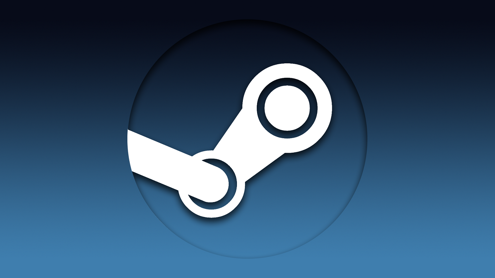
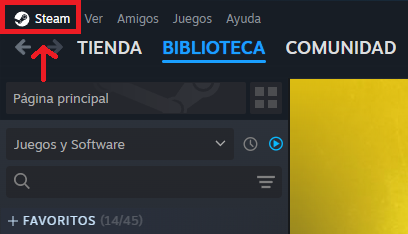
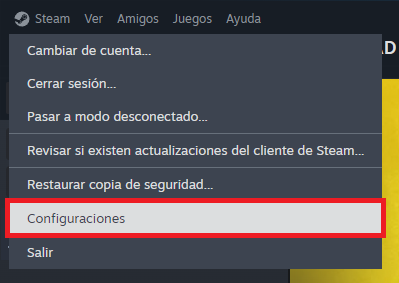
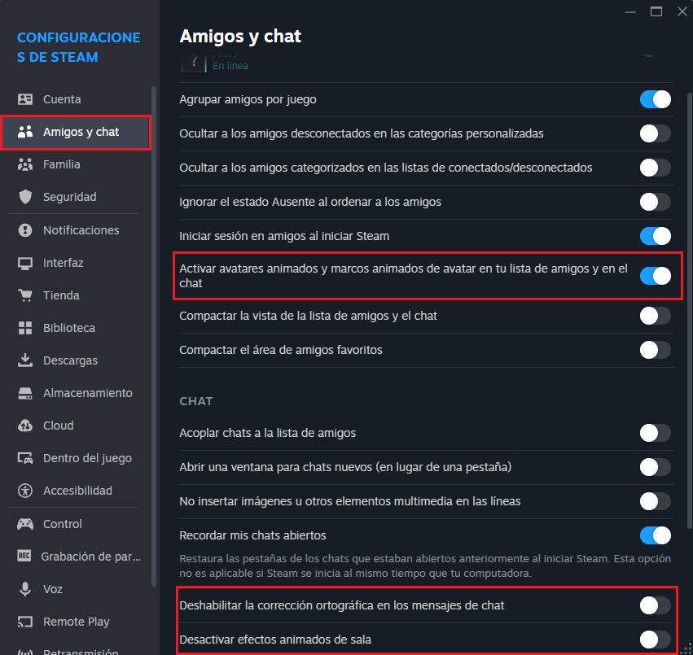
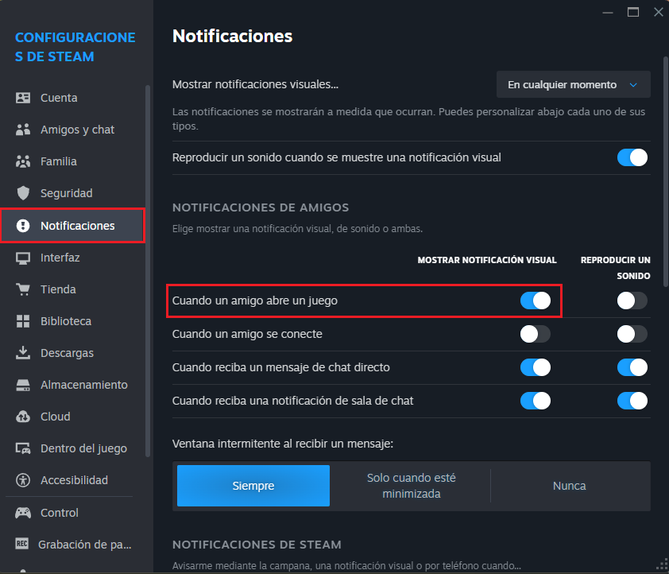
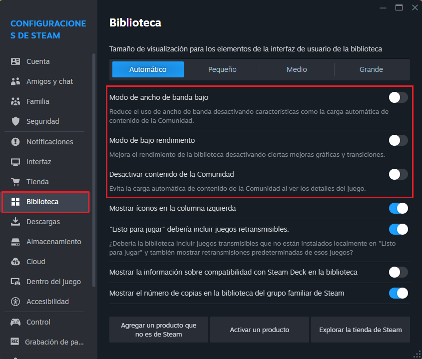
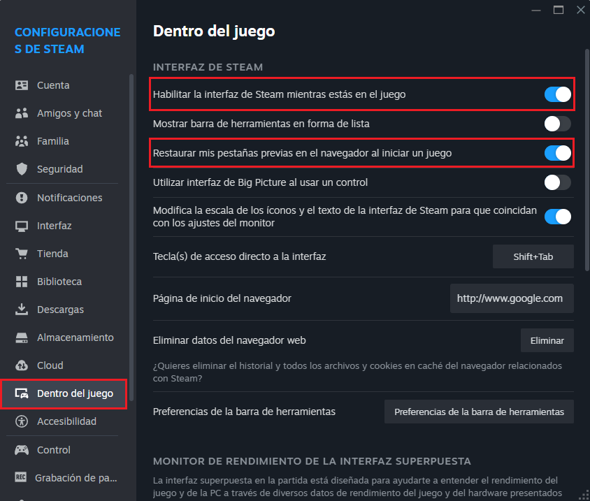
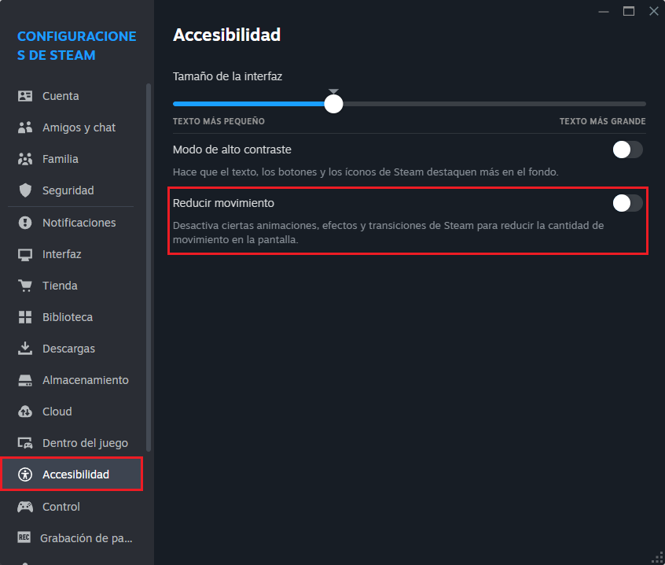
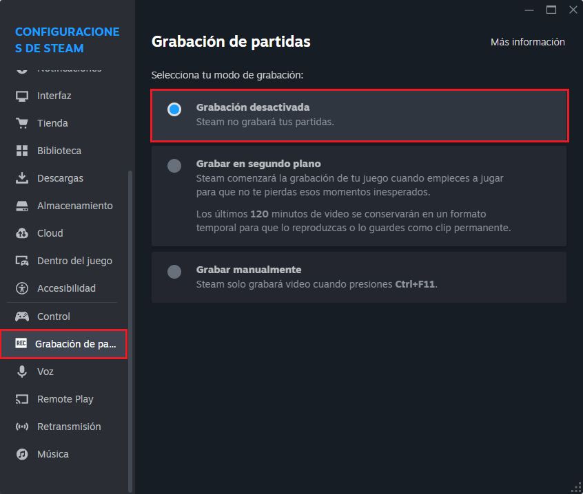
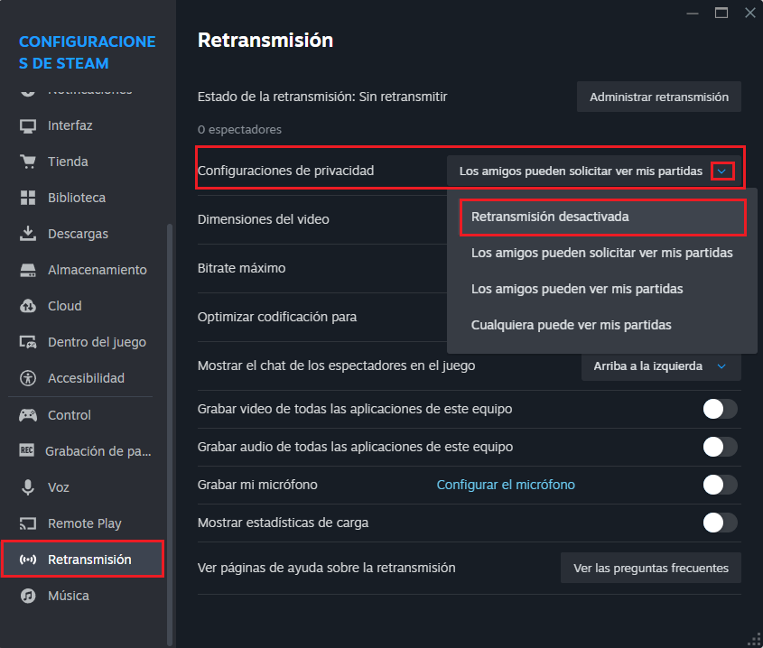

¡Aumentá el rendimiento de Steam!
Steam es uno de los launchers más utilizados actualmente, tanto en computadoras modernas como antiguas, por ello es que veremos como optimizarlo.

Steam es uno de los launchers más utilizados actualmente, tanto en computadoras modernas como antiguas, por ello es que veremos como optimizarlo.

Para empezar esta optimización es fundamental tener abierto Steam.
El apartado de configuración se encuentra en la esquina superior izquierda del cliente, donde dice Steam, damos clic y entramos en Configuraciones o Parámetros.


Acá configuraremos un par de opciones relacionadas con los chats y la lista de amigos.

Para evitar molestias a la hora de utilizar la computadora, podremos desactivar la notificación cuando alguien abre un juego.

En este apartado aceleraremos la Biblioteca de Steam, donde aparecen nuestros juegos.

En este apartado desactivaremos la interfaz de Steam que se puede utilizar en los juegos.

En esta sección desactivaremos algunas animaciones, efectos y transiciones de Steam.

Desactivaremos la grabación de partidas, ya que consume recursos de nuestra computadora mientras jugamos, cosa que en esta guía no queremos.

Aquí desactivaremos la opción de retransmisión, que nos permite mostrar a nuestros amigos la partida que estamos jugando. Esta opción puede afectar la estabilidad de la red.

Con todo esto, ya habremos optimizado Steam. Ahora podremos disfrutar de un mayor rendimiento en nuestros juegos.
En general, es recomendable optimizar nuestros programas como Steam, sobretodo en equipos antiguos, en los que detalles visuales, por más simples que sean, pueden afectar al rendimiento. Por eso es recomendable optimizar este launcher, para ganar un rendimiento extra a la hora de jugar o explorar en la aplicación.